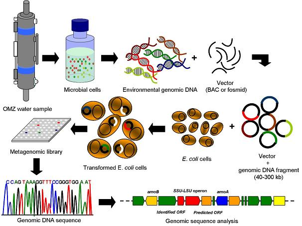

| Metagenómica |
Las comunidades microbiales son significativos moduladores de los flujos de materia y energía en los océanos. Aun teniendo una abundancia cercana a 1030 células, es poco lo que se conoce acerca de su diversidad genética.
La metagenómica es un enfoque molecular independiente de cultivo, que permite a los científicos analizar grandes cantidades de información genética de los microorganismos en muestras del ambiente.
Obtener información genética a través de la metagenómica mejorará nuestro entendimiento acerca de los organismos nativos que habitan la OMZ.
Las etapas del estudio metagenómico de las poblaciones microbiales que habitan la OMZ son:
1. La colección de una muestra desde una profundidad en particular y la extracción de su ADN genómico.
2. La generación de grandes y separados fragmentos de ADN (40-300kb) que proveen información de un organismo único mediante la clonación y secuenciación.
3. La selección de clones en base a una función u organismo específico, e.g., via secuenciación de los extremos de los vectores.
4. La secuenciación completa de los clones selccionados.
5. El análisis de las secuencias genómicas y la identificación y mapeo de genes.

|